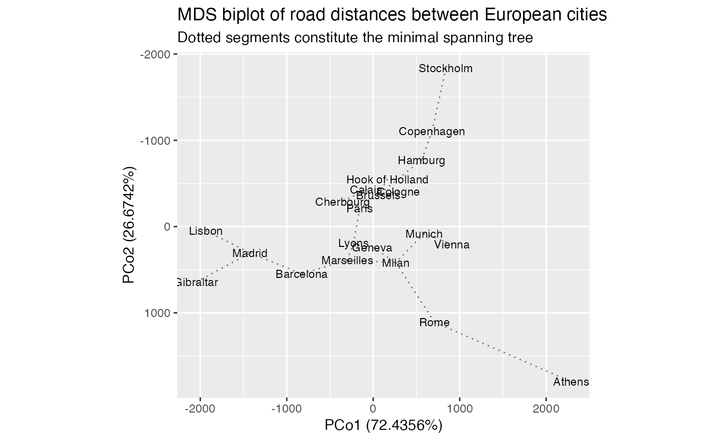

stat_spantree.RdThis stat layer identifies the \(n-1\) pairs among \(n\)
points that form a minimum spanning tree, then calculates the segments
between these poirs in the two dimensions x and y.
stat_spantree( mapping = NULL, data = NULL, geom = "segment", position = "identity", method = "euclidean", show.legend = NA, inherit.aes = TRUE, check.aes = TRUE, ... )
| mapping | Set of aesthetic mappings created by |
|---|---|
| data | The data to be displayed in this layer. There are three options: If A A |
| geom | The geometric object to use display the data |
| position | Position adjustment, either as a string, or the result of a call to a position adjustment function. |
| method | Passed to |
| show.legend | logical. Should this layer be included in the legends?
|
| inherit.aes | If |
| check.aes | If |
| ... | Additional arguments passed to |
A minimum spanning tree (MST) on the point cloud \(X\) is a minimal
connected graph on \(X\) with the smallest possible sum of distances (or
dissimilarities) between linked points. These layers call stats::dist() to
calculate a distance/dissimilarity object and vegan::spantree() to
calculate the MST. The result is formatted with position aesthetics readable
by ggplot2::geom_segment().
An MST calculated on x and y reflects the distances among the points in
\(X\) in the reduced-dimension plane of the biplot. In contrast, one
calculated on the full set of coordinates reflects distances in
higher-dimensional space. Plotting this high-dimensional MST on the
2-dimensional biplot provides a visual cue as to how faithfully two
dimensions can encapsulate the "true" distances between points (Jolliffe,
2002).
ggbiplot() uses ggplot2::fortify() internally to produce a single data
frame with a .matrix column distinguishing the subjects ("rows") and
variables ("cols"). The stat layers stat_rows() and stat_cols() simply
filter the data frame to one of these two.
The geom layers geom_rows_*() and geom_cols_*() call the corresponding
stat in order to render plot elements for the corresponding factor matrix.
geom_dims_*() selects a default matrix based on common practice, e.g.
points for rows and arrows for columns.
The convenience function [ord_aes()] can be used to incorporate all
coordinates of the ordination model into a statistical transformation. It
maps the coordinates to the custom aesthetics ..coord1, ..coord2, etc.
Some transformations, e.g. [stat_center()], are commutative with projection
to the 'x' and 'y' coordinates. If they detect aesthetics of the form
..coord[0-9]+, then ..coord1 and ..coord2 are converted to x and y
while any remaining are ignored.
Other transformations, e.g. stat_spantree()], yield different results in a
planar biplot when they are computer before or after projection. If such a
stat layer detects these aesthetics, then the lot of them are used in the
transformation.
In either case, the stat layer returns a data frame with position aesthetics
x and y.
Jolliffe IT (2002) Principal Component Analysis, Second Edition. Springer Series in Statistics, ISSN 0172-7397. doi: 10.1007/b98835 https://www.springer.com/gp/book/9780387954424
Other stat layers:
stat_center(),
stat_chull(),
stat_cone(),
stat_scale()
# classical multidimensional scaling of road distances between European cities eurodist %>% cmdscale_ord(k = 11) %>% as_tbl_ord() %>% augment_ord() %>% print() -> euro_mds#> # A tbl_ord of class 'cmds_ord': (21 x 11) x (21 x 11)' #> # 11 coordinates: PCo1, PCo2, ..., PCo11 #> # #> # Rows (symmetric): [ 21 x 11 | 1 ] #> PCo1 PCo2 PCo3 ... | .name #> | <chr> #> 1 2290. 1799. 53.8 | 1 Athens #> 2 -825. 547. -114. ... | 2 Barcelona #> 3 59.2 -367. 178. | 3 Brussels #> 4 -82.8 -430. 300. | 4 Calais #> 5 -352. -291. 457. | 5 Cherbourg #> # … with 16 more rows #> # #> # Columns (symmetric): [ 21 x 11 | 1 ] #> PCo1 PCo2 PCo3 ... | .name #> | <chr> #> 1 2290. 1799. 53.8 | 1 Athens #> 2 -825. 547. -114. ... | 2 Barcelona #> 3 59.2 -367. 178. | 3 Brussels #> 4 -82.8 -430. 300. | 4 Calais #> 5 -352. -291. 457. | 5 Cherbourg #> # … with 16 more rows# biplot with minimal spanning tree based on full-dimensional distances euro_mds %>% ggbiplot() + scale_y_reverse() + stat_cols_spantree( ord_aes(euro_mds), check.aes = FALSE, alpha = .5, linetype = "dotted" ) + geom_cols_text(aes(label = .name), size = 3) + ggtitle( "MDS biplot of road distances between European cities", "Dotted segments constitute the minimal spanning tree" )